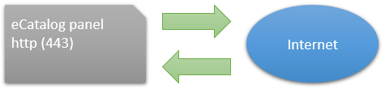
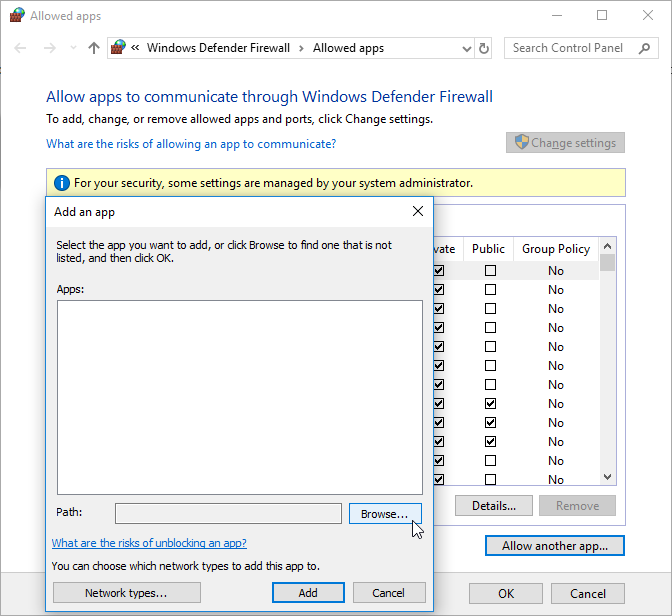
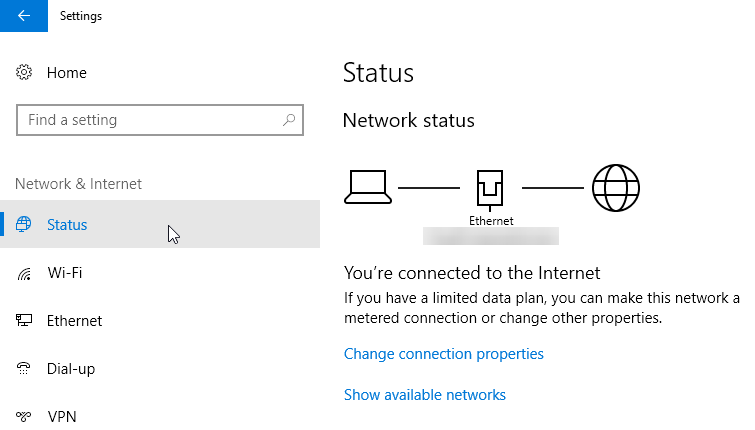
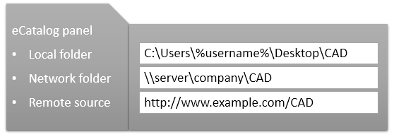
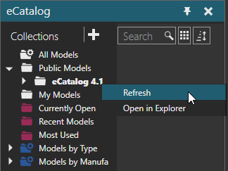
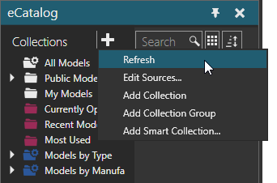

In some cases, you might need to troubleshoot the eCatalog panel.
The eCatalog panel acts like a web browser and uses HTTP (port 443).

Your network and firewall(s) must allow traffic from R-Pro 2.1. In some cases, you may need to contact your network administrator to allow this action.
Example. Allow traffic using Windows Defender Firewall

Example. Allow traffic using third-party software
In other cases, you could connect to a Home or less secure network when the eCatalog needs to communicate with remote resources, for example to download an online library.

If the computer running R-Pro 2.1 does not have access to the Internet and your eCatalog panel is empty, contact support and request an "eCat package" which is an offline copy of the library shipped with R-Pro 2.1.
The eCatalog panel links to sources of files. A source can be a local folder or a resource defined by a URI.

All sources are indexed by the eCatalog panel and saved to a database file. R-Pro 2.1 uses a SQLite memory database.
In some cases, you may need to refresh a source or collection to index files and update mappings.

In other cases, you might need to refresh all resources.

The eCatalog panel logs events. For example, when you run R-Pro 2.1 the eCatalog panel will execute an update to synchronize files in sources.
| [Log opening] 2018-02-16 14:50:55,785 INFO - Run Offline eCat updater 2018-02-16 14:50:56,450 INFO - Scanning the local folder... 2018-02-16 14:50:56,451 INFO - XML loaded, starting to scan local folder in C:\Users\Public\Documents\... 2018-02-16 14:50:57,160 INFO - Scanning the local folder has finished! 2018-02-16 14:50:57,180 INFO - Added files : 0 2018-02-16 14:50:57,180 INFO - Updated files : 0 2018-02-16 14:50:57,180 INFO - Removed files : 0 2018-02-16 14:50:57,181 INFO - No changes to files : 458 2018-02-16 14:50:57,181 INFO - Synchronization finished. 2018-02-16 14:50:57,181 INFO - Offline eCat updater finished! [Log closing] |